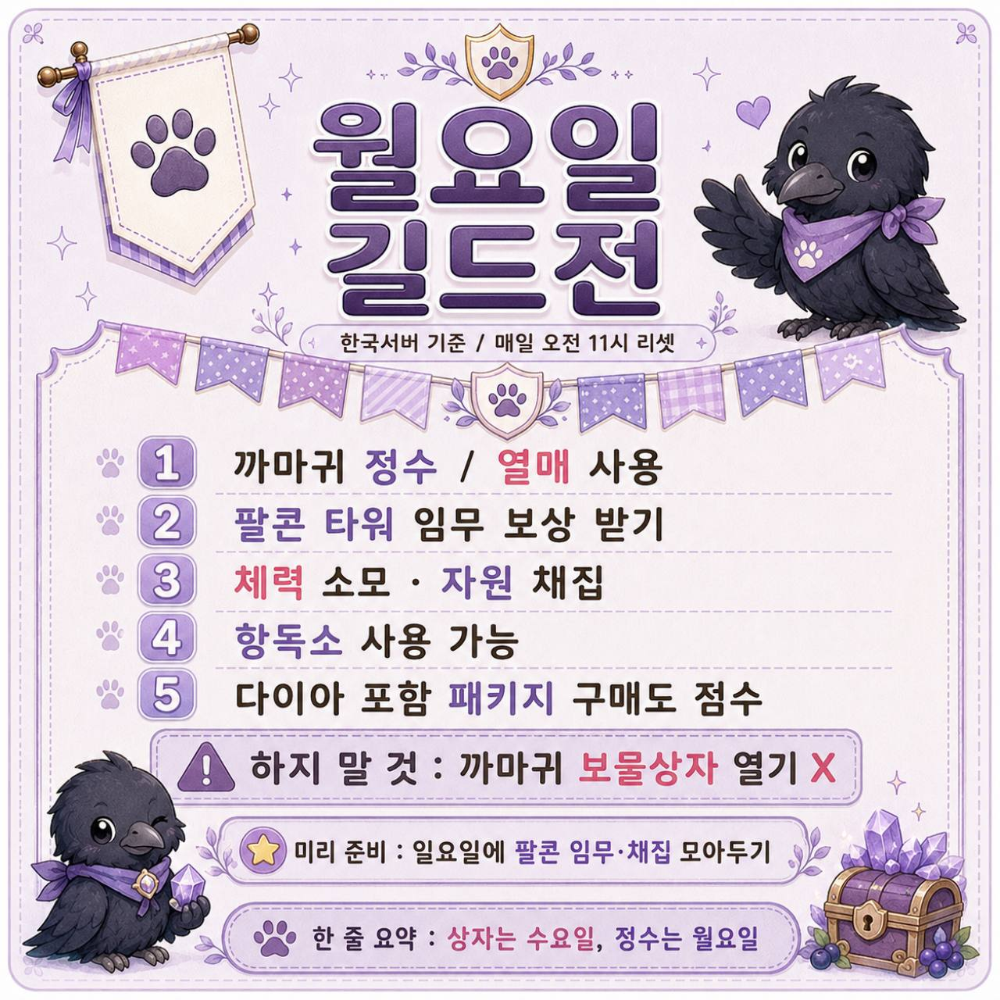
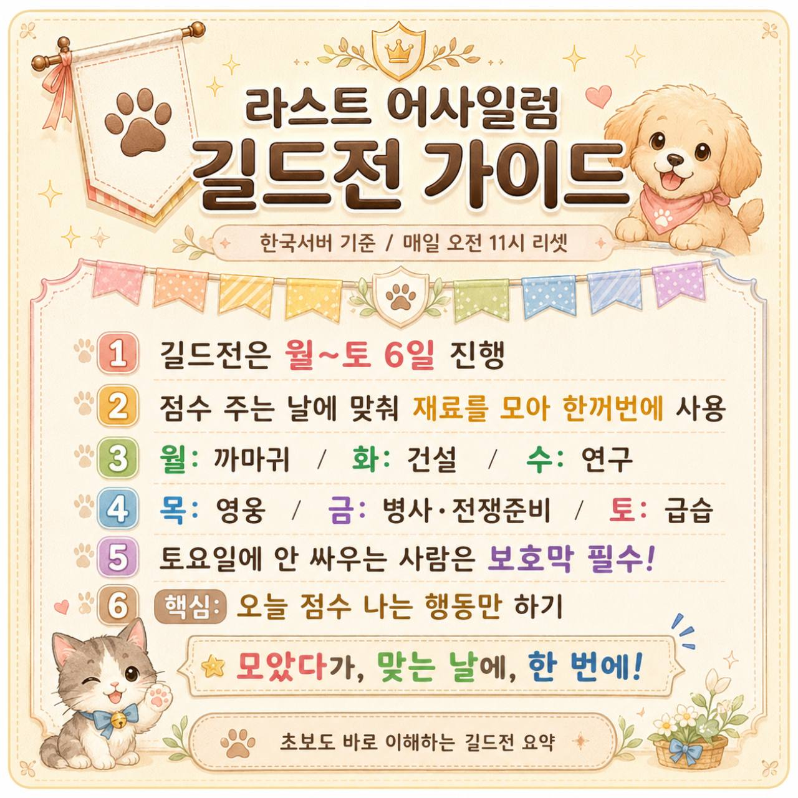
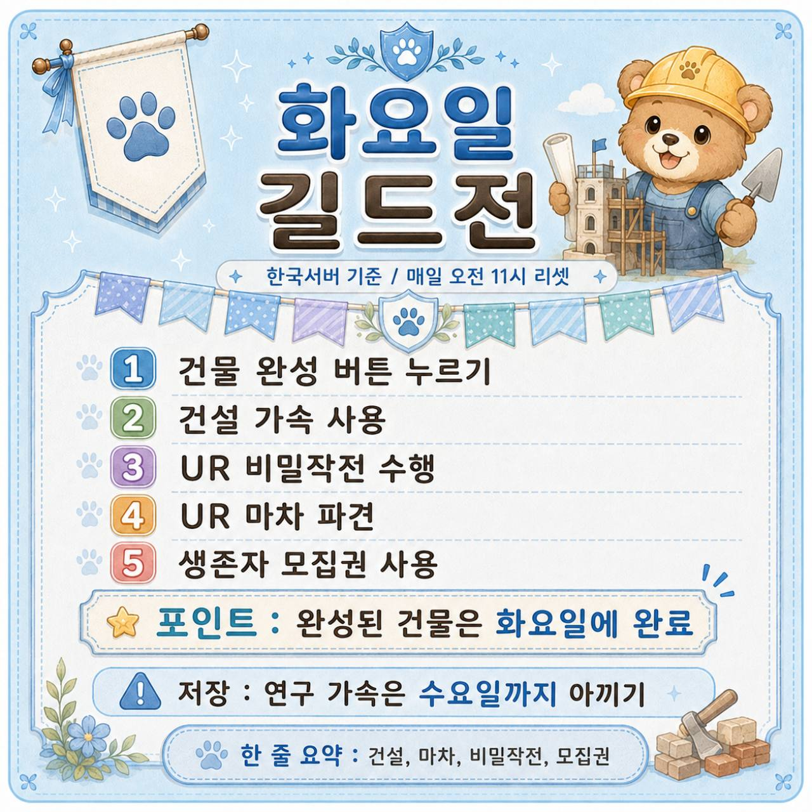
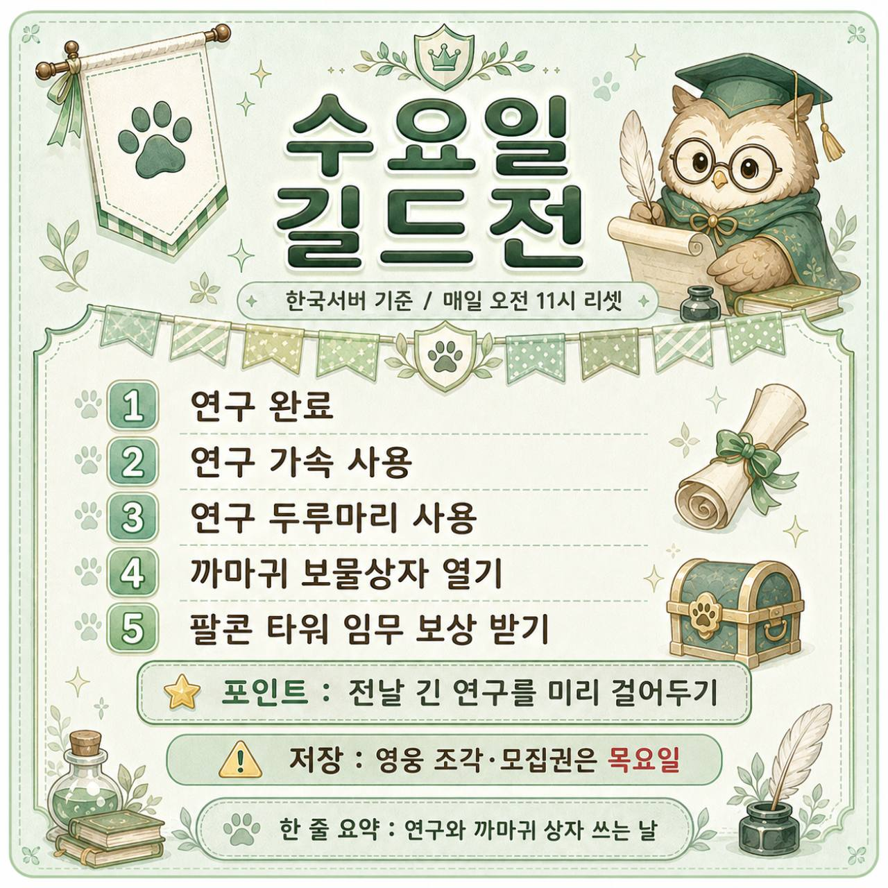
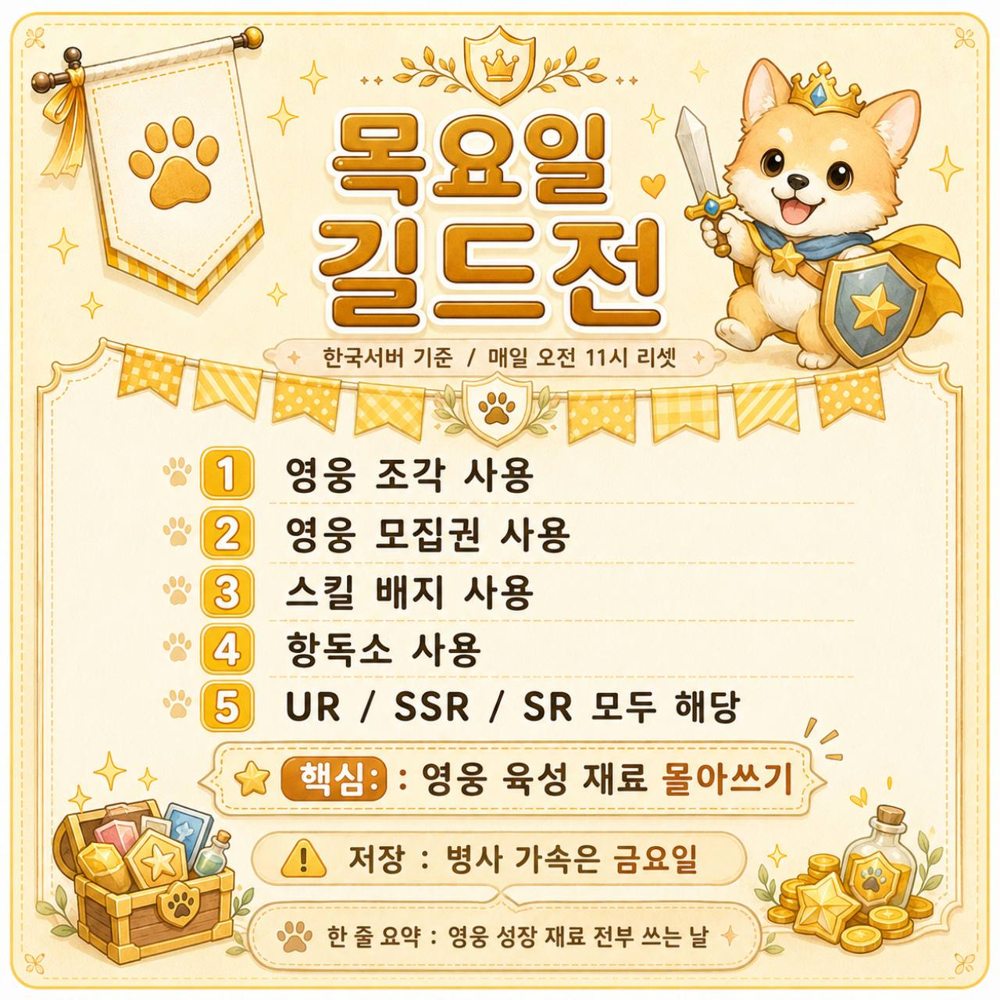
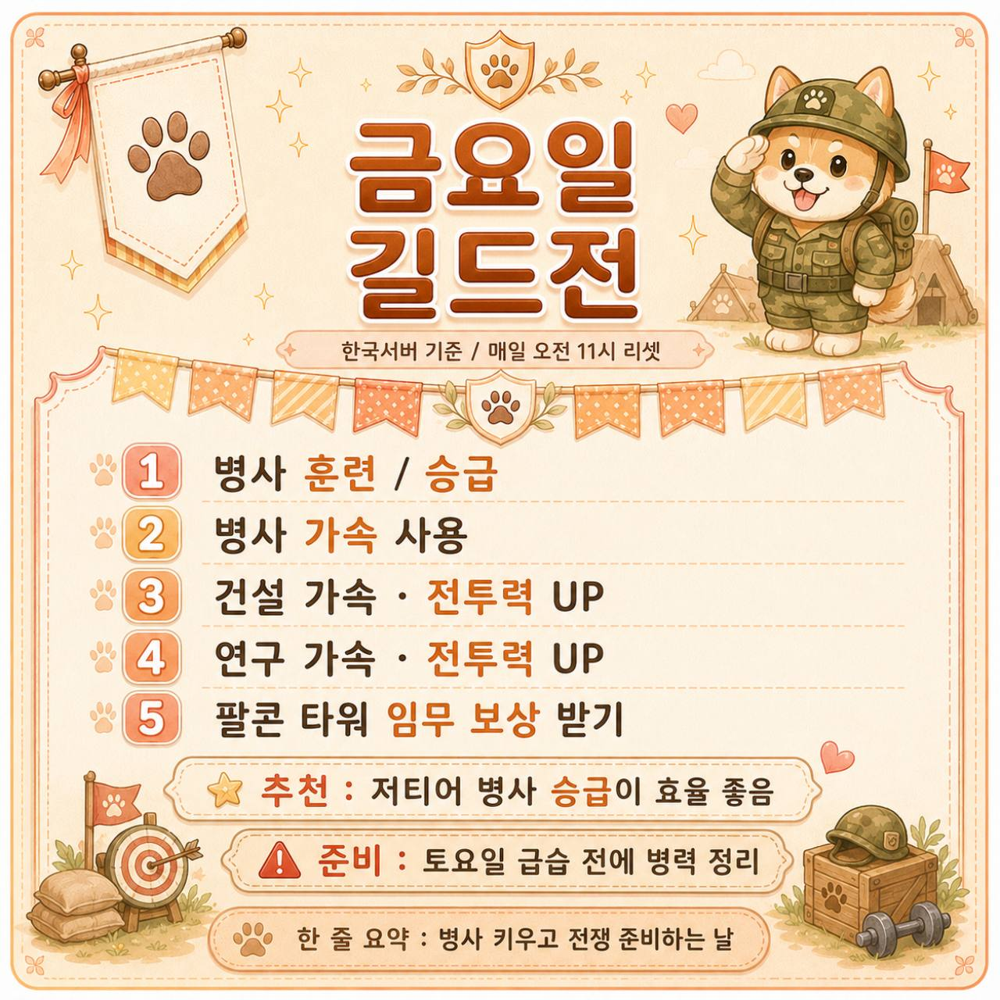
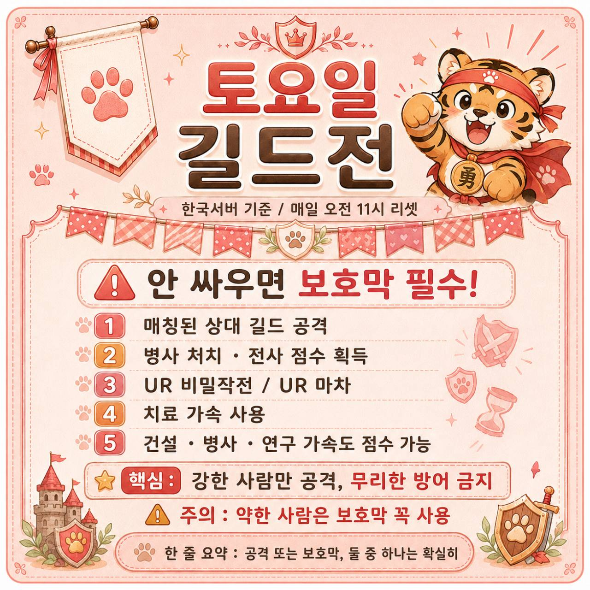

DAY 1 · 월요일
까마귀 · 채집
당일 사용: 팰콘 퀘스트 보상, 까마귀 정수·과일, 체력, 채집.
서바이벌 연계: ‘까마귀 강화’ 창일 때 체력과 정수를 한 번에 사용합니다. 채집 부대는 비는 시간 없이 계속 보냅니다.
전날 받은 팰콘 보상을 월요일에 수령하는 것이 핵심입니다. 보상을 미리 받아 버리면 큰 점수를 잃습니다.

오늘 재료를 오늘 쓰는 것에서 끝나지 않습니다. 전날에 완료 시각을 맞춰 두고, 당일에는 서바이벌 배틀의 같은 테마 창에 모아 써야 점수와 보상을 함께 챙길 수 있습니다.
① 길드전 테마와 무관한 재료는 보관 · ② 서바이벌 배틀의 같은 테마 4시간 창에 집중 · ③ 토요일엔 점수보다 병력 보존과 길드 콜이 우선입니다.

원문 자료의 주간 요약 이미지입니다. 아래에서 요일별로 풀어서 설명합니다.길드전 당일 테마와 같은 서바이벌 배틀 창에서만 큰 재료를 사용합니다. 서바이벌 배틀은 4시간마다 바뀌므로, 아래 시간대가 시작되기 5분 전에 이벤트 화면을 열어 다음 테마를 확인하세요.
당일 사용: 팰콘 퀘스트 보상, 까마귀 정수·과일, 체력, 채집.
서바이벌 연계: ‘까마귀 강화’ 창일 때 체력과 정수를 한 번에 사용합니다. 채집 부대는 비는 시간 없이 계속 보냅니다.
전날 받은 팰콘 보상을 월요일에 수령하는 것이 핵심입니다. 보상을 미리 받아 버리면 큰 점수를 잃습니다.

당일 사용: 건물 완료·건설 가속·생존자 모집, UR 캐러밴, UR 비밀 작전.
서바이벌 연계: ‘영지 개발’ 창이 열렸을 때만 완료 버튼을 누르고 건설 가속을 씁니다.
건물은 미리 거의 끝내 둔 뒤 화요일에 수령하세요. 진행 중인 건물을 당일 새로 시작하면 점수 타이밍을 놓치기 쉽습니다.

당일 사용: 연구 완료·연구 가속·학습 두루마리·까마귀 장비 상자.
서바이벌 연계: ‘기술 연구’ 창과 겹칠 때 연구 완료와 가속을 처리합니다.
긴 연구는 전날 시작해 수요일에 완료되도록 계산하세요. 바로 끝나는 작은 연구만 여러 개 하는 것보다 큰 완료 보상을 맞추는 편이 좋습니다.

당일 사용: 영웅 모집권, 영웅 조각, 스킬 배지, 해독제.
서바이벌 연계: ‘영웅 강화’ 창에 맞춰 모집과 승성을 한 번에 처리합니다.
무·소과금은 영웅 재료를 평소에 흩어 쓰지 않는 편이 중요합니다. 성장도 하고 길드전 개인 보상도 챙기는 날로 만드세요.

당일 사용: 병사 훈련·승급·훈련 가속. 건설·연구 가속도 점수에 포함되는지 당일 목록을 확인합니다.
서바이벌 연계: ‘병사 훈련’ 창에 맞춰 훈련장 완료, 승급, 훈련 가속을 몰아서 합니다.
평일에 한 단계 낮은 티어 병사를 만들어 두고 금요일에 최고 티어로 승급하면, 새로 훈련하는 것보다 준비가 쉽습니다.

당일 행동: 상대 길드 교전, 길드 집결·좌표·증원 콜 따르기.
주의: 혼자 공격해서 병사를 잃는 것보다 길드 콜을 기다리는 편이 낫습니다. 참여가 어렵거나 방어가 안 되면 보호막으로 병력을 지키세요.
토요일은 서바이벌 배틀 점수보다 병력 보존과 길드전 승리에 기여하는 것이 우선입니다.

자료 기준: 6ON 원문 이미지 자료와 공개된 Alliance Duel · Survival Battle 운영 자료를 한국어 게임 표기로 재정리했습니다. 이벤트 점수·테마·시간은 업데이트될 수 있으므로 당일 게임 내 이벤트 화면을 마지막 기준으로 확인하세요.